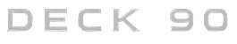

L
R
BPM
--
NO SIGNAL
GONIO
| CUÁNDO | TEMA | LUFS I | MASTER | LRA | PICO | BPM | SPOTIFY |
|---|
Spotify, YouTube, un video, lo que sea: Deck 90 lo mide solo, sin configurar nada. Si querés, podés usar el micrófono o probar con la señal DEMO.
Cinco looks listos: tocá uno y mirá el rack atrás. Cada uno tiene un segundo look (tocá su número otra vez) y en LOOKS podés guardar tres tuyos.
Todo esto queda en los ajustes: el primer botón de las herramientas, o la tecla A. La tecla I muestra todas las teclas y las novedades de cada versión.
